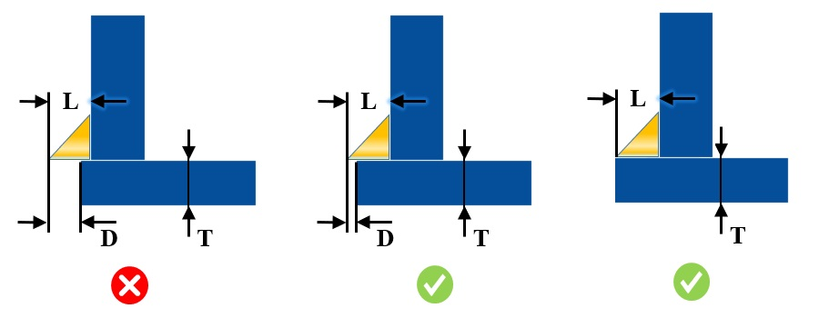

溶接が載る面（溶接レスト面）が不十分な場合、溶接品質や作業効率に悪影響を及ぼし、仕上げのための後加工工程やコストの増加につながる可能性があります。許容される溶接オーバーハングは、板厚および対応する溶接長さに基づいて構成できます。
溶接に使用可能なスペースを超えて延びているすみ肉溶接を特定することは非常に重要です。溶接長さが水平面上の利用可能な溶接スペースを超えている場合、許容差の積み上げ（トレランスロールアップ）により、その状態は不適切であると判定されます。また、溶接オーバーハングの存在は、後処理工程やコストの増加を引き起こします。
板厚および対応する溶接長さに基づき、設計者は溶接周辺の領域に十分な溶接レスト面が確保され、かつ障害物のない状態であることを確認する必要があります。
ユーザーは、板厚の範囲、対応する溶接長さ、およびそれぞれに対する許容溶接オーバーハング量を構成できます。
本ルールの実行において、解析対象となるのはすみ肉溶接のみです。
板から板へのすべての交差シームについて溶接が存在するものと仮定し、解析対象として考慮されます（板厚は除外されます）。
解析は、溶接アセンブリ（留め具を含む）に対して実行されます。これは、（留め具を除く）すべてのパーツが溶接コンポーネントとして扱われることを意味します。なお、このようなアセンブリに含まれる留め具は、DFMProのハードウェアデータベースに追加されている必要があります。
すみ肉溶接の幅（Width）と長さ（Length）は同一であると仮定します。
ルール構成ダイアログボックスで指定された板厚範囲に対して、DFMProはルール検証のために利用可能な最小の板厚を考慮します。
DFMProは、板厚が一定であり、変動しないものと仮定します。

ここで、
D = Weld Overhang Distance "溶接オーバーハング距離"
T = Plate Thickness "板厚"
L = Weld Length "溶接長さ"